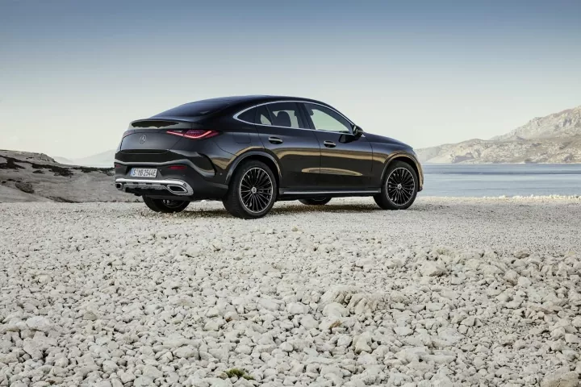
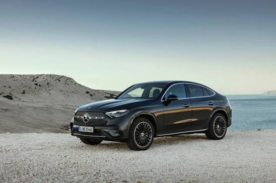

The Mercedes-Benz GLC Coupé is a luxury SUV that combines the practicality and higher driving position of an SUV with the sleek, sporty design of a coupé. Its sloping roofline gives it a more stylish and dynamic appearance compared with the standard GLC, while still providing a comfortable interior and seating for five people. It is designed to offer a smooth and refined driving experience, making it suitable for both everyday driving and longer trips.


Inside, the GLC Coupé features a modern and premium cabin with Mercedes-Benz MBUX infotainment, digital displays, smartphone connectivity and a range of safety and driver-assistance technologies. It is available with different engine options, including petrol and plug-in hybrid models, depending on the market and specification. Overall, the GLC Coupé is a good choice for someone who wants the comfort and practicality of an SUV but prefers a sportier and more luxurious design.